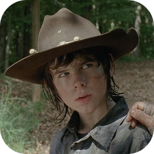

Personagens

Michonne
Michonne é uma sobrevivente habilidosa que utiliza uma katana. É conhecida por sua coragem e lealdade.

Carl
Carl é filho de Rick Grimes. Cresceu durante o apocalipse e aprendeu a enfrentar os perigos desse mundo.
Daryl
Daryl é um excelente rastreador e caçador. Utiliza uma besta e se torna um dos principais membros do grupo.

Maggie
Maggie é uma sobrevivente determinada que desenvolve grandes habilidades de liderança.

Glenn
Glenn era entregador de pizzas antes do apocalipse. É conhecido por sua inteligência, agilidade e bondade.

Carol
Carol passa por uma grande transformação e se torna uma das sobreviventes mais estratégicas do grupo.

Negan
Negan é o antigo líder dos Salvadores. É conhecido por sua personalidade provocadora e pelo taco Lucille.

Governador
O Governador liderava a comunidade de Woodbury. Apesar de parecer amigável, escondia um lado cruel.

Alpha
Alpha é a líder dos Sussurradores, um grupo que utiliza disfarces para caminhar entre os mortos.